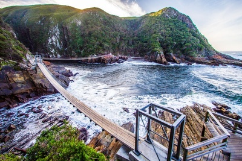
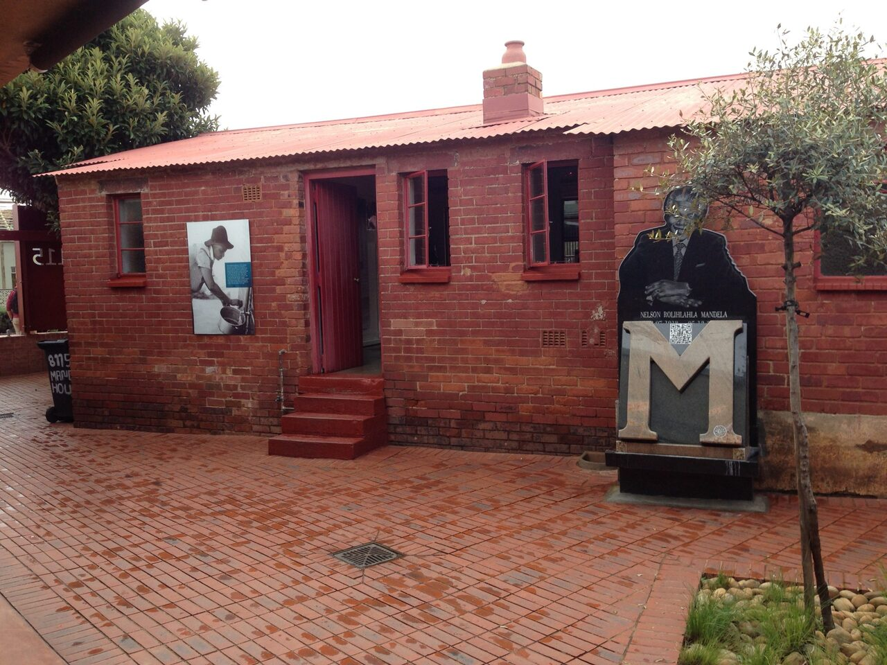
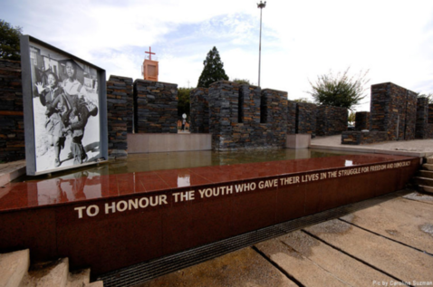
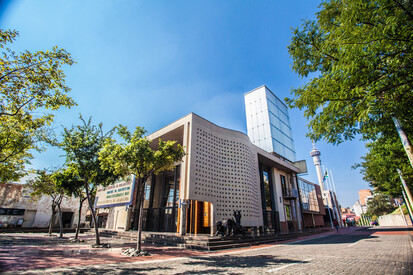

Tsitsikamma National Park is an area of the Garden Route National Park,
in the Eastern Cape on South Africa's southern coast, I have never visited
the province before I would love tp see this beautiful place with a marine reserve,
deep gorges and local vegetation.
French is the world's second-most widely learned foreign language after English, and it's easy to see why.
Including France and Canada, French is the official language of 29 countries—meaning whether you visit Tunisia,
Senegal, or Switzerland, you'll likely be able to communicate well with locals.
| French |
English |
| Bonjour |
Hello |
| Comment allez-vous |
How are you |
| Je vais bien |
I am good |
The Mandela House was awarded public heritage status in 1999
The house is a single-story red-brick matchbox built in 1945.
It has bullet holes in the walls and the facade has scorch marks from attacks with Molotov cocktails

The museum is located on 8288 Khumalo Street,Orlando West (Soweto).
The museum is named after one of the first casualties.
But commerates all of those that marched through Soweto and shot at by police ont he 16 June, 1976!

A total of 156 people, including Nelson Mandela and Oliver Tambo,
were arrested and held at the prison complex before the historic Treason Trial in 1956,
and two years later, 2 000 women – Winnie Madikizela-Mandela and Albertina Sisulu among them – were detained after protesting the pass laws.
